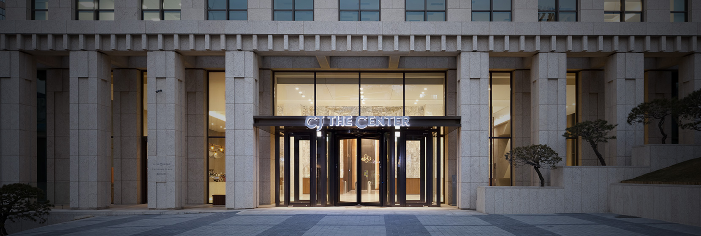
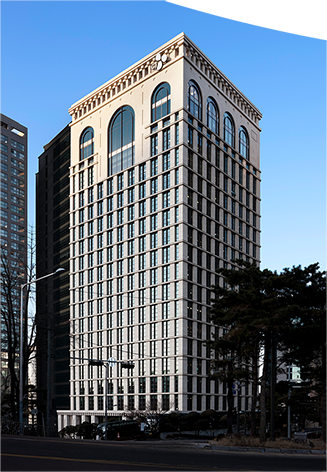
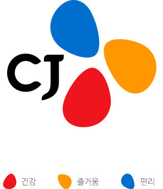

HOME > >

CULTURE
문화를 만드는 일은 CJ가 가장 잘하는 일입니다.
CJ는 우리의 아름다운 문화를 전 세계인들에게 알리기 위해 가장 앞서 달리고
있습니다. 세계의 라이프스타일을 주도하는 한류의 중심에 CJ가 있습니다.
GLOBAL
전 세계인이 일상생활 속에서 한국의 영화, 음식, 드라마, 음악을 마음껏 즐기며
일상의 행복을 누리게 되는 것. 그리고 이를 가장 앞서서 이끄는
최고의 생활문화기업이 되는 것이 바로 CJ의 꿈입니다.
ONLYONE
ONLYONE 정신은 모든 면에서 최초, 최고, 차별화를 추구하는
CJ가 최우선으로 지향하는 가치입니다. 이를 바탕으로
CJ는 남들이 하지 않은 새로운 제품과 서비스, 시스템, 사업을
지속적으로 창출해 가고 있습니다.

CJ의 세가지 컬러는
건강, 즐거움, 편리를 상징합니다.
CJ는 우리의 문화를 더 넓은 세상,
더 많은 사람들에게 알리기 위해 앞장서고 있습니다.
전 세계인이 일상에서 한국의 영화, 음식, 드라마, 음악을 마음껏 즐기며
행복을 누리는 것,
인류의 삶을 보다 풍요롭게 만드는 것이 CJ가 꿈꾸는 세상입니다.
이를 위해 CJ는 식품 & 식품서비스, 생명공학, 물류 & 신유통,
엔터테인먼트 & 미디어 4대 사업을 중심으로
전 세계인이 함께 누리는 건강하고, 즐겁고,
편리한 글로벌 라이프스타일을 만들고 있습니다.
CJ의 Blossom은 이러한 가치를 전달하는 한편 세계 시장과 고객을 향해
만개하는 꽃처럼 새롭게 피어나는 CJ를 상징하며 고객에게
언제나 새롭고 친근하게 다가가는 기업이라는 의미를 담고 있습니다.
회사소개
- CJ는 ONLYONE 정신으로
세계인의 문화를 만들어 갑니다

CJ는 우리의 아름다운 문화를 전 세계인들에게 알리기 위해 가장 앞서 달리고
있습니다. 세계의 라이프스타일을 주도하는 한류의 중심에 CJ가 있습니다.
일상의 행복을 누리게 되는 것. 그리고 이를 가장 앞서서 이끄는
최고의 생활문화기업이 되는 것이 바로 CJ의 꿈입니다.
CJ가 최우선으로 지향하는 가치입니다. 이를 바탕으로
CJ는 남들이 하지 않은 새로운 제품과 서비스, 시스템, 사업을
지속적으로 창출해 가고 있습니다.

CJ의 세가지 컬러는
건강, 즐거움, 편리를 상징합니다.
더 많은 사람들에게 알리기 위해 앞장서고 있습니다.
전 세계인이 일상에서 한국의 영화, 음식, 드라마, 음악을 마음껏 즐기며
행복을 누리는 것,
인류의 삶을 보다 풍요롭게 만드는 것이 CJ가 꿈꾸는 세상입니다.
이를 위해 CJ는 식품 & 식품서비스, 생명공학, 물류 & 신유통,
엔터테인먼트 & 미디어 4대 사업을 중심으로
전 세계인이 함께 누리는 건강하고, 즐겁고,
편리한 글로벌 라이프스타일을 만들고 있습니다.
CJ의 Blossom은 이러한 가치를 전달하는 한편 세계 시장과 고객을 향해
만개하는 꽃처럼 새롭게 피어나는 CJ를 상징하며 고객에게
언제나 새롭고 친근하게 다가가는 기업이라는 의미를 담고 있습니다.

 undefined
undefined undefined
undefined